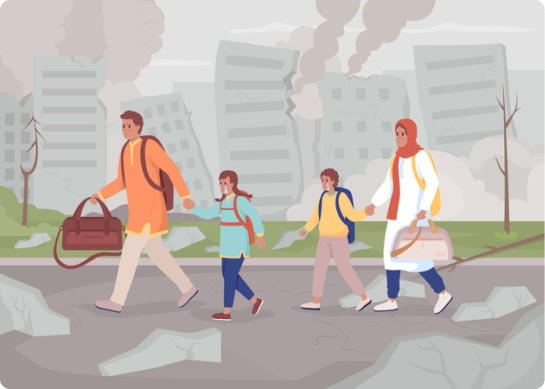

Help Ukraine Rigth Now
Надішліть гуманітарну або військову допомогу
Не відправляйте гуманітарне повітря на невстановлені склади. Ми надаємо інформацію лише в перевірені місця.
ПІДТРИМАТИ
У разі надзвичайної ситуації чи війни
- Тримайте біля себе записи про групу крові (свою та близьких родичів) та інформацію про можливі проблеми зі здоров’ям (наприклад, алергію на медичні препарати, хронічні захворювання);
- Завжди носіть із собою документ, що посвідчує особу. Зберігайте гроші та документи в різних місцях - так у вас буде більше шансів їх зберегти;
- Намагайтеся якнайменше знаходитись поза житлом і роботою, зменшіть кількість поїздок без важливої причини, уникайте місць скупчення людей;
- У разі отримання з офіційних державних каналів інформації про можливу небезпеку передайте її іншим людям: родичам, сусідам, колегам;

Деякі питання варто розглянути заздалегідь:
- Дізнайтеся, де розташовані найближчі до вас сховища та сховища вдома, на роботі та місцях, які ви часто відвідуєте;
- Запасіться питною та технічною водою, продуктами тривалого зберігання;
- Подбайте про альтернативні засоби освітлення приміщення на випадок відключення електроенергії (ліхтарики, свічки);
- Зберіть найнеобхідніші речі та документи на випадок термінової евакуації або передачі на зберігання;
- Подбайте про справність власного транспорту та запас палива для своєчасної евакуації з небезпечної зони;

У жодному разі
НЕ ВАРТО:
- Підходити до вікон, якщо чуєте постріли;
- Спостерігати за ходом бойових дій, стояти чи бігти під вогнем;
- Сперечатися з озброєними людьми, фотографувати та робити записи в їх присутності;
- Демонструвати зброю або схожі на неї предмети;
- Підбирати покинуту зброю та боєприпаси;
- Носити військову форму або камуфляжний одяг;
- Торкатися до вибухонебезпечних і підозрілих предметів, спробуйте їх розібрати або перенести в інше місце.


How not to become victim disinformation
-
1The goal of the spreaders of disinformation is to sow panic, to weaken our will to defend ourselves. Maintain self-control and do not spread information of an emotional nature in social networks.
-
2Ukraine defends itself and continues the struggle for its territory. If you hear the opposite, it is not true. They want to demoralize you.
-
3Do not believe or spread information from dubious sources. Reliable information — on official pages and channels state bodies and Public Broadcasting.
-
4Don't spread information about the move in any way Ukrainian troops. You can hurt those who defend you and the state.
-
5Ukraine is waging a defensive war on its territory. The report about the alleged shelling of the civilian population by the Ukrainian military is not true.
-
6Information about losses can only be known by security authorities and defense of Ukraine. Information on private accounts can not true. Do not rush to share such information.
-
7The aggressor will spread slander and "treason" through his official or controlled channels. And others can use it means - to hide behind patriotic slogans and Ukrainian symbols Check out the patriotic-looking but questionable ones messages and calls.
-
8The aggressor will spread various rumors not only about the fighters, but and about the military-political leadership, so that Ukrainians don't they trusted him too. Check every alarming news with the official ones sources
-
9The enemy's goal is to split Ukrainian society from within and destroy our faith in our own strength. We are really different and ours views may not coincide, but we have a common cause - repel the occupier. So keep unity and support each other.
-
10If the Internet connection or government pages are interrupted organs were broken, contact Public Broadcasting for information. If the television is not working, turn it on subscriber radio point.